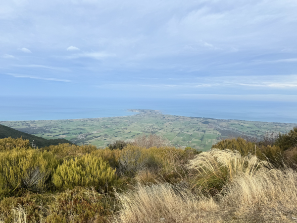
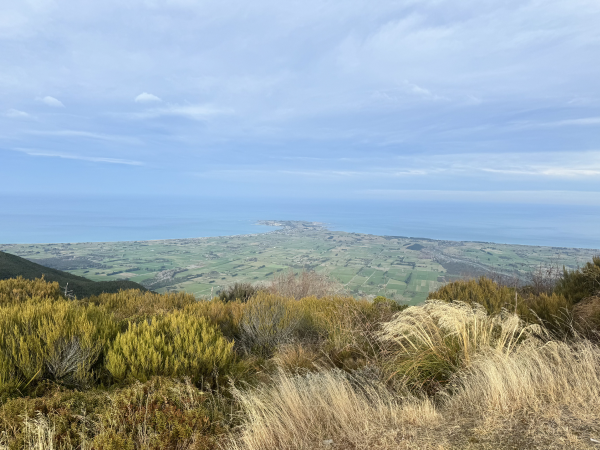
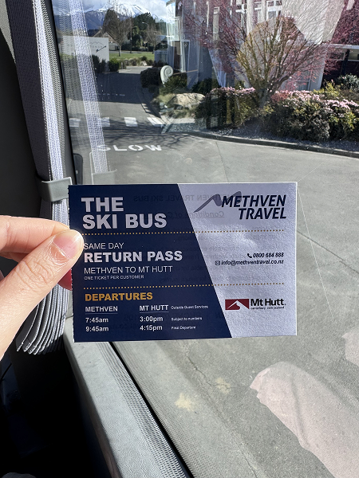
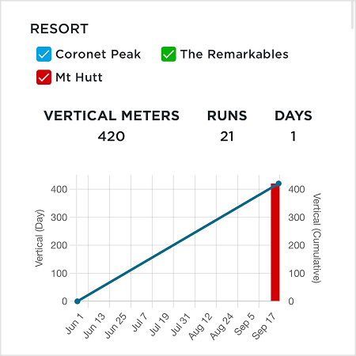
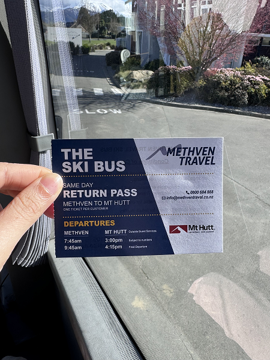
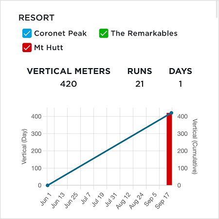

Wed, 13 Mar 2024
18°C


Landing in Christchurch
Spent the day exploring the city center and visiting the botanical gardens...
A vibrant heart of the South Island, with sprawling plains, majestic mountains, and charming towns.
Spent the day exploring the city center and visiting the botanical gardens...
Absolutely phenomenal experience! Got recommended WingsoverWhales by Alistair who knew someone here (Jo) and we were able to get a slot pretty quick!
We spent most of the flight trying to catch wind of where the whales might be and thought we'd return with just memories of the nice scenery... but on the return leg this big boy popped up and made our day üòÅ
Signed up for seals and got dolphins too! What a sweet deal ü•π Guide was a real chill guy.
 

First mountain climb in NZ and this really got me questioning my life decisions.
Couldn't reach the peak due to ice but I think I made a pretty valiant attempt for a couch potato...
Est made it up to ~1300m/1600m
 



First day on the slopes! Forgot how much of a PITA ski boots are üò™
My instructor was Luis, tbh I can't sing his praises but at the same time I'm not exactly the most well-coordinated person around...
Out of an entire class of noobs, I can confidently say I was the noobest, so that's an achievement in itself for the day.

A very nice Tuesday morning spent with the gnomes, bunnies, toadstools, and fluffy mehmehs.
Really stunning milky blue reminiscent of the Hokitika Gorge, but with Mt Hutt looming in the background! Gorgeous, gorgeous.
Got an amazing instructor! Improved so much and upgraded from carpet to green slope :)
Another great instructor today. I finally managed to stop faceplanting the ground ü•πüôå
Graduated from ski class and flying solo today! Went down the usual Highway 72, but also tried Back Paddock and Broadway (first blue slope!) under very intense peer pressure courtesy of the bro üòí
Was seriously scared at Back Paddock (harder green) and thought I wouldn't survive Broadway, but Broadway's actually easier because of well, how broad it is.